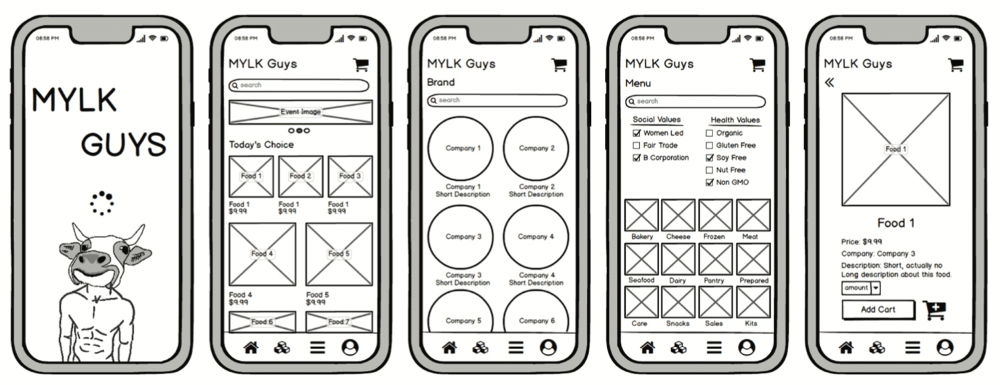

MylkGuys
App Design
UI/UX DESIGN
Designing and testing a prototyped mobile
application design for grocery startup MylkGuys
application design for grocery startup MylkGuys
TECH
Basalmiq, FigmaTEAM
4 designers, JeffDemance, Youngie Cho
Kevin Xiang, and myself
TIME
October 2019 (2 weeks)The Goal
To create and test a mockup of an application for vegan grocery startup "MylkGuys"The Design
WIREFRAMING
We knew that the service would be mainly targeted towards tech-savvy younger consumers. With this demographic information, we came up with some mockups of designs that we thought would serve our users

PROTOTYPING
After we settled on our wireframe of choice, we proceeded to replicate the design in Figma, an online prototyping program. We proposed this design to our peers and found that we had confirmed some of our initial uncertainties, it became evident that our brand based searching option was a feature that was foreign to many of our users, and thus it represented a needless confusion. We modified our prototype once more and prepared for user testing.TESTING
After we created our prototype, it was time to see how users interacted with it. We devised a number of actions to be performed and posted our project on UserTesting.comSUBTASKS
Find JustEGGsRead the JustEGGs description
Add JustEGGs to cart
Buy items from cart